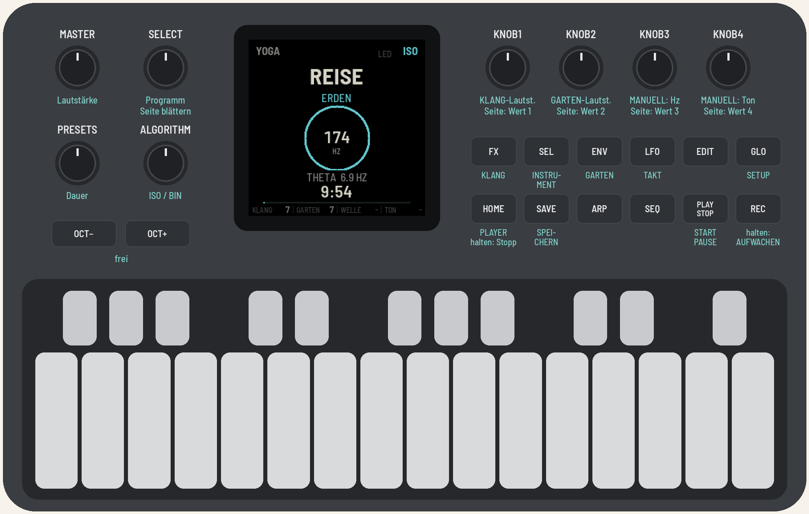

FM1 YOGA
Klänge für die Endentspannung: eine Firmware für den M-VAVE FM-1. Geführte Programme auf 174, 396, 432 und 528 Hz mit einem sanften Rhythmus von Theta nach Delta (ISO für Lautsprecher, BIN für Kopfhörer), Atem-Rauschen, Klangschalen, ein schwebender Ambient-Garten und ein Instrument auf den Tasten: Handpan, Kalimba, Zungentrommel, Klangschalen oder Koshi.

Version 1.0-rc1. Die Installation geschieht auf eigenes Risiko; der Installer kann die Original-Firmware von M-VAVE zurückspielen. Entspannungsklänge, kein medizinisches Verfahren.
- Im Browser ausprobieren: dieselbe Firmware, mit Ton, ohne FM-1.
- Installieren: in Chrome oder Edge, mit dem FM-1 per USB.
- Download yoga-1.0-rc1.fwsc: für die Kommandozeile,
python3 base/tools/fm1_install.py yoga-1.0-rc1.fwsc. - Anleitung und Quellcode: MPL-2.0. Gebaut auf AMB-1 von Charles Vestal sowie fm1-base und felucca-bsp, nach Felucca von Leo Kuroshita (Hügelton Instruments).
M-VAVE und FM-1 sind Marken ihrer Inhaber. FM1 YOGA ist nicht mit M-VAVE verbunden.